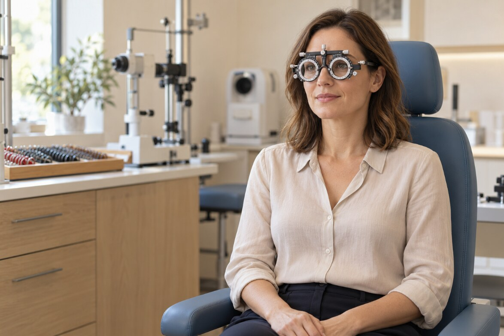
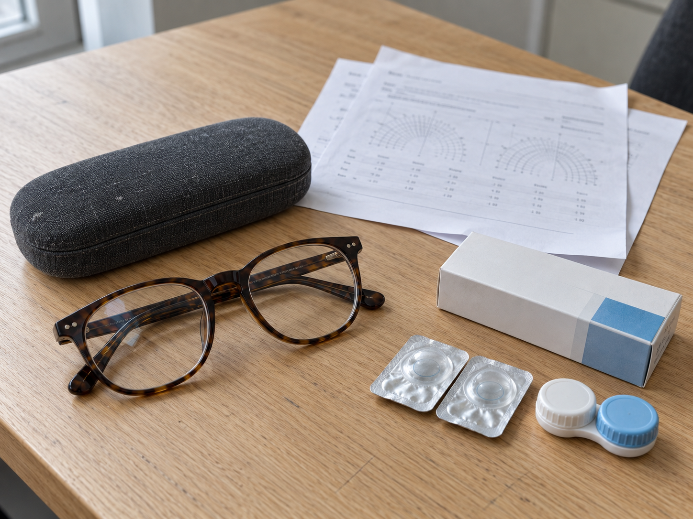
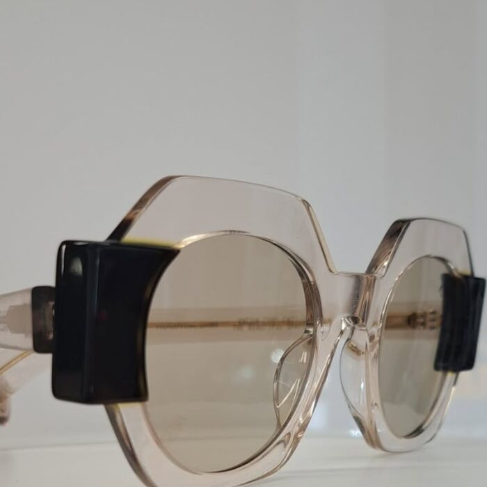
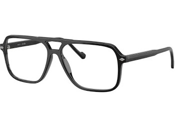

Badanie wzroku w Lublinie
Zadbaj
o wyraźne
widzenie
Porozmawiajmy o Twoim wzroku i dobierzmy korekcję do codziennych potrzeb.

Dobry wzrok
zaczyna się
od rozmowy
Każdy z nas widzi i funkcjonuje nieco inaczej. Dlatego zaczynamy od spokojnej rozmowy o Twoim stylu życia, potrzebach i trudnościach w codziennym widzeniu. Na tej podstawie dobieramy odpowiednią korekcję.
Praca przy komputerze
Porozmawiajmy o Twoich nawykach i komforcie widzenia na ekranie.
Czytanie z bliska
Dobierzemy korekcję z myślą o książkach, telefonie i codziennych drobiazgach.
Widzenie na odległość
Sprawdzimy, jak widzisz w dal — w pracy, za kierownicą i w wolnym czasie.
Przebieg badania
Jak wygląda badanie?
Rozmowa
Poznajemy Twoje potrzeby, styl życia i oczekiwania względem widzenia.
Pomiary i dobór korekcji
Sprawdzamy ostrość widzenia i dobieramy odpowiednią korekcję.
Omówienie wyników
Wyjaśniamy wynik prostym językiem i omawiamy dalszy dobór okularów lub soczewek.

Co zabrać na wizytę?
- Obecne okulary
Jeśli ich używasz, weź je ze sobą.
- Wcześniejsze wyniki badań
Jeśli je masz, zabierz też dotychczasową receptę.
- Informacje o używanych soczewkach
Dotyczy osób noszących soczewki kontaktowe.
Szczegóły przygotowania potwierdzimy przy umawianiu wizyty.
Najczęściej zadawane pytania
Przed wizytą warto wiedzieć
Ile trwa badanie?
Czas wizyty zależy od jej zakresu. Szczegóły podamy podczas umawiania terminu pod numerem 723 980 100.
Jaki jest koszt badania?
Aktualną cenę podamy telefonicznie lub w salonie, przed umówieniem badania.
Czy trzeba wcześniej umówić wizytę?
Zadzwoń pod numer 723 980 100, żeby sprawdzić dostępność i ustalić dogodny termin.
Zrób pierwszy krok
do wyraźnego widzenia
Zapytaj o dostępny termin.
Poznaj także
Co dalej?

Okulary korekcyjne
Oprawki do Twojej twarzy, soczewki do Twojego dnia.

Okulary progresywne
Jedna para na różne odległości.
Do zobaczenia przy kawie
Odwiedź nasz salon w Lublinie.
- Adres salonuul. Obywatelska 11, 20-092 Lublin
- Zadzwoń do nas723 980 100optykprzykawce@gmail.com
- Godziny otwarciaPon.–pt.: 9:00–18:00Weekend: zamknięte